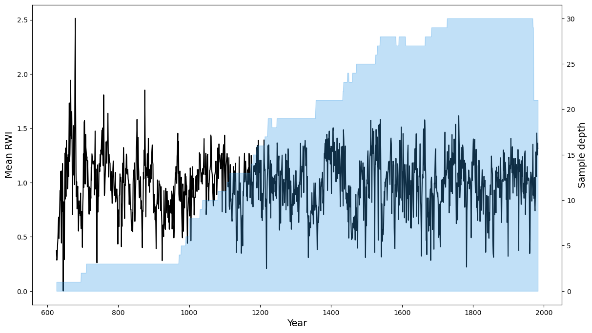
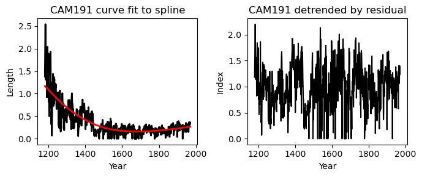
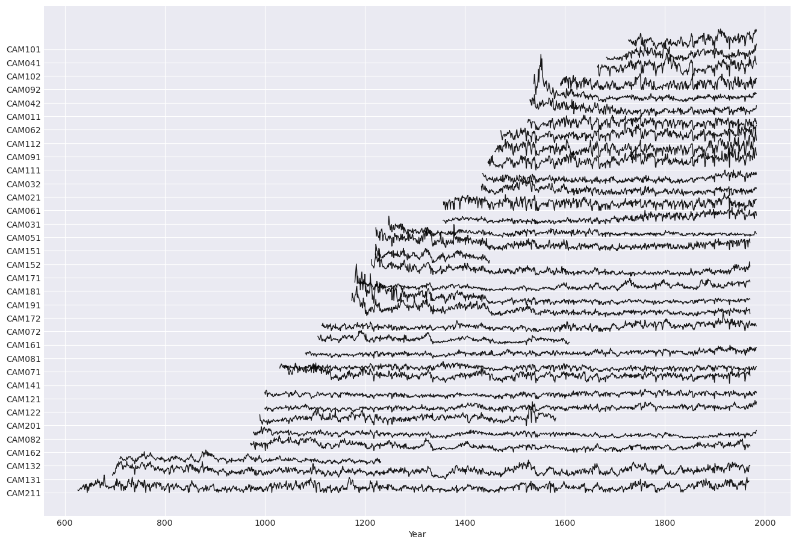
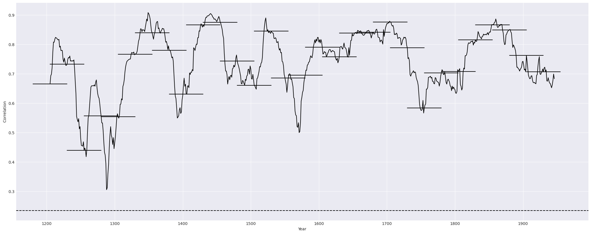
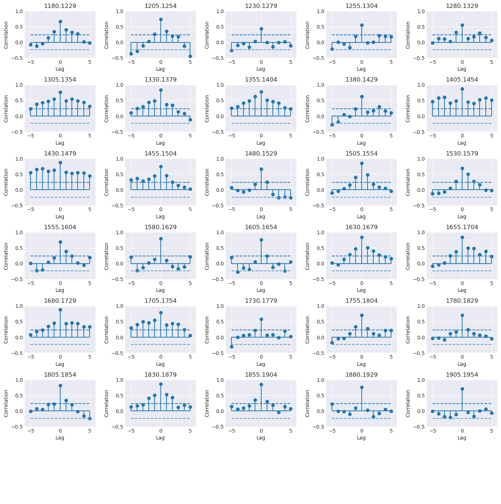
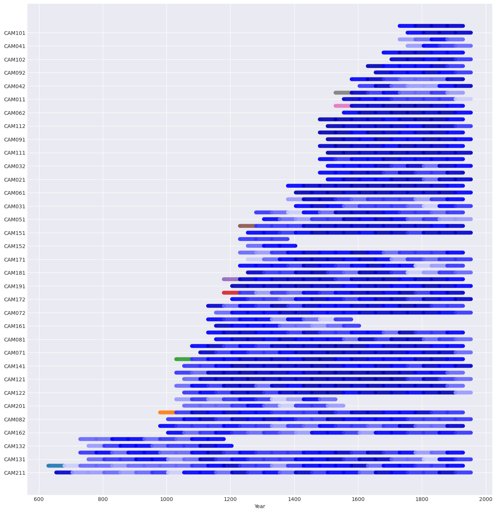

dplpy User Manual¶
Welcome to the dplpy user manual
Here is a list of functions (in alphabetical order) with descriptions:
| Function | Description |
|---|---|
ar_func |
Fits series to autoregressive (AR) models and related functions |
autoreg |
Fits series to autoregressive (AR) models and related functions |
chron |
Creates a mean value chronology for a dataset, typically the ring width indices of a detrended series |
detrend |
Detrends a given series or data frame, first by fitting data to curve(s), with spline(s) as the default, and then by calculating residuals or differences compared to the original data. |
help |
Displays help (alpha). |
plot |
Generates line, spaghetti or segment plots. |
rbar |
Finds best interval of overlapping series over a period of years, and calculating rbar constant for a dataset over period of overlap. |
readers |
Reads data from supported file types (*.CSV and *.RWL) and stores them in dataframe. |
readme |
Goes to this website. |
report |
Generates a report about absent rings in the data set. |
series_corr |
Crossdating function that focuses on the comparison of one series to the master chronology. |
stats |
Generates summary statistics for RWL and CSV format files. |
summary |
Generates a summary for RWL and CSV format files. |
xdate |
Crossdating function for dplPy loaded datasets. |
ar_func¶
Summary
Main function for autoregressive (AR) modeling.
Returns residuals and mean of best AR fit with specified lag.
Parameters
-
data:str- a data file (.CSVor.RWL) or a pandas dataframe imported fromdpl.readers(). -
series:str- an individual series within a chronologydatafile. -
lag:intdefault5- nuber of years.
Examples
>>> dpl.ar_func(<data>["<series>"], <lag number>)
>>> dpl.ar_func(ca533["CAM191"], 10)
In the above example, we use dataset look at dataset ca533 series CAM191 and specified a lag of 10.
Returns
Users can expect an array of residuals + mean for selected series.
The expected output from the example above will look similar to this:
array([ 0.71130658, -0.23204695, 0.52121028, 0.57597523, 0.90108448,
0.20495808, -0.23457629, 0.58819405, 0.66478718, 0.47521983,
0.92695177, -0.35659493, 0.42220031, -0.19197698, -0.08828572,
0.5320343 , 0.28471761, 0.39486259, 0.10748019, 0.25214937,
0.46500727, 1.45016901, 0.28605889, 0.29470389, 0.34120629,
-0.31249819, 0.42380461, 0.23473108, -0.06796468, 0.38897624,
0.68666198, 0.77677716, 0.62360082, 0.43398575, 0.74032758,
0.5880663 , 0.20567916, 0.23525549, 0.63297387, 0.94101874,
0.06615244, 0.73838454, 0.51092414, 0.25087689, 0.3873105 ,
0.48383716, 0.28317419, 0.46750972, 0.60187677, 0.40542752,
0.54822178, 0.08560112, 0.26122762, 0.13318504, 0.25876284,
0.56315817, 0.40823334, 0.36114307, 0.49613157, 0.4169329 ,
0.40733772, 0.25578201, 0.42718681, 0.59555259, -0.21075308,
0.11587297, 0.62082607, 0.65467697, -0.17674732, 0.56107325,
0.51825623, 0.58111792, 0.61318262, 0.3742455 , 0.07211766,
0.01136486, 0.06596661, 0.32254786, 0.39898574, 0.22616678,
0.34727753, 0.42409955, 0.51594014, 0.23294973, 0.50911683,
0.84802911, 0.48218982, 0.393356 , 0.22153173, 0.65209051,
0.48231136, 0.19053267, 0.39660363, 0.39800466, 0.29138228,
-0.030384 , 0.49157549, 0.49579055, 0.25640508, 0.48196172,
0.28278419, 0.53502938, 0.41559126, 0.34577752, 0.33023954,
0.55383387, 0.4391052 , 0.35063736, 0.20157626, 0.25298519,
0.51312838, 0.53184596, 0.43997298, 0.27903576, 0.43143646,
0.45186539, 0.3734363 , 0.41050279, 0.67168476, 0.31693981,
0.32281309, 0.5155617 , 0.51985799, 0.48651392, 0.50650445,
...
0.39541278, 0.47066705, 0.34558178, 0.46008747, 0.34158785,
0.3672973 , 0.37749446, 0.34939726, 0.37388067, 0.4241256 ,
0.23815543, 0.29207569, 0.47247813, 0.44170539, 0.4410876 ,
0.4007522 , 0.29655365, 0.38460918, 0.39774193, 0.42761775,
0.38384653])
autoreg¶
Summary
Secondary function for AR modeling. Returns parameters of best fit AR model with specified lag.
Best AR model is selected based on AIC value.
Parameters
-
data:str- a data file (.CSVor.RWL) or a pandas dataframe imported fromdpl.readers(). -
series:str- an individual series within a chronologydatafile. -
lag:intdefault5- nuber of years.
Note
This function and its outputs are integrated in the ar_func function.
Examples
>>> import dplpy as dpl
>>> data = dpl.readers("../tests/data/csv/ca533.csv")
>>> dpl.autoreg(data['series name']) -> returns parameters of best fit AR model
with maxlag of 5 (default) or other
specified number
dpl.autoreg(ca533["CAM191"], 10)
Returns
A table listing autoregressive paramenters for the specified series;
The expected output from the example above will look similar to this:
const 0.022210
CAM191.L1 0.503373
CAM191.L2 0.087230
CAM191.L3 0.143716
CAM191.L4 0.020119
CAM191.L5 -0.027769
CAM191.L6 -0.010029
CAM191.L7 0.001373
CAM191.L8 0.025588
CAM191.L9 0.042340
CAM191.L10 0.136916
dtype: float64
chron¶
Summary
Creates a mean value chronology for a dataset, typically the ring width indices of a detrended series. Takes three optional arguments biweight, prewhiten, and plot. They determine whether to find means using Tukey's bi-weight robust mean (default True), whether to prewhiten data by fitting to an AR model (default False), and whether to plot the results of the chronology (default True).
Parameters
-
data: a pandas dataframe - a pandas dataframe imported fromdpl.readers() -
biweight:boolean, defaultTrue- use Tukey's bi-weight robust mean -
prewhiten:boolean, defaultFalse- run pre-whitening on the time series -
plot:boolean, defaultTrue- plot the results
Examples
>>> dpl.chron(<data>, prewhiten=<True/False>, biweight=<True/False>, plot=<True/False>)
>>> import dplpy as dpl
>>> ca533 = dpl.readers("../tests/data/csv/ca533.csv")
# Detrending data first
>>> rwi_ca533 = dpl.detrend(ca533)
# Creating chronology using detrended data
>>> dpl.chron(rwi_ca533, prewhiten=False, biweight=True, plot=True)
Returns
The expected output is the mean value chronology of a specific dataframe.
The expected output from the example above will look similar to this:
Mean RWI Sample depth
Year
626 0.371605 1
627 0.284398 1
628 0.306523 1
629 0.416333 1
630 0.482462 1
... ... ...
1979 1.053427 21
1980 1.455353 21
1981 1.252526 21
1982 1.362244 21
1983 1.314827 21
1358 rows × 2 columns
If plot=True then a plot will also be generated:

detrend¶
Summary
Detrends a given series or dataframe, first by fitting data to curve(s), with spline as the default, and then by calculating residuals (default = residual) or differences (difference) compared to the original data. Other supported curve fitting methods are ModNegex (modified negative exponential), Hugershoff, linear, horizontal.
Parameters
-
data: a pandas dataframe - a pandas dataframe imported fromdpl.readers() -
series:str- an individual series within a chronologydatafile. -
fit:str, defaultspline- fitting method of curves, e.g.,horizontal,Hugershoff,linear,ModNegex(modified negative exponential), andspline. -
method:str, defaultresidual- intercomparison method, options:differenceorresidual. -
plot:boolean, defaultTrue- plot the results.
Examples
>>> import dplpy as dpl
>>> data = dpl.readers("../tests/data/csv/file.csv")
>>> dpl.detrend(data)
# Detrending a series part of the dataframe
>>> dpl.detrend(data["<series>"])
# Detrending function and its options
>>> dpl.detrend(data["<series>"], fit="<fitting method>", method="<comparison method>", plot=<True/False>)
Returns
The expected output is the a list of detrended values (for the entire dataset or for a specific series)
The expected output from the example above will look similar to this:
1180 1.180835
1181 1.511543
1182 1.870558
1183 2.197630
1184 1.815025
...
1966 1.060515
1967 1.209514
1968 1.282459
1969 1.392746
1970 1.239629
Name: CAM191, Length: 791, dtype: float64
If plot=True then a plot will also be generated:

help¶
Summary
Python includes a built in help() functionality.
Use help() to read the documentation for each dplpy function.
Examples
>>> help(dpl.readers)
plot¶
Summary
Plots a given dataframe or series of a specific dataframe in either line (default), spaghetti (spag) or segment (seg) plots.
Parameters
-
data: a pandas dataframe - a pandas dataframe imported fromdpl.readers() -
series:str- an individual series within a chronologydatafile. -
type:str- type of plot to generate, e.g.,line, spaghetti (spag), or segment (seg). defaultline
Examples
>>> dpl.plot(<data>)
# Plot series subset of dataframe with a specified plot type
>>> dpl.plot(<data>["<series>"], type=<plot type>)
Returns
A graph of the specified dataframe.
From the example above, the expected output would look something similar to the below plot:

rbar¶
Summary
Finds best interval of overlapping series over a long period of years and calculates rbar constant for a dataset. Supports a number of rbar methods: osborn, 67spline, frank.
Parameters
-
data: a pandas dataframe - a pandas dataframe imported fromdpl.readers() -
start:int- start date year -
end:int- end date year -
method:strdefaultosborn- rbar method, optionsosborn,67spline,frank.
Further development underway. Future versions to prioritize number of series, number of years or both. Current version attempts to do both.
Examples
# Detrend data
>>> rwi_data = dpl.detrend(<data>, plot=False)
# Find common interval of detrended data
>>> start, end = dpl.common_interval(<data>)
# Calculate rbar coonstant
>>> dpl.rbar(rwi_data, start, end, method="<rbar method>")
Example:
# Detrend data
>>> rwi_data = dpl.detrend(ca533, plot=False)
# Find common interval of detrended data
>>> start, end = dpl.common_interval(ca533)
# Calculate rbar coonstant using the interval calculated above and using the Osborn method
>>> dpl.rbar(rwi_data, start, end, method="osborn")
Returns
rbar returns a list of constants to multiply with each mean value generated for a range of years from a mean value chronology.
From the example above, the output is the following:
[0.44170725878965766,
0.44170725878965766,
0.44170725878965766,
0.44170725878965766,
0.44170725878965766,
0.44170725878965766,
...
0.44170725878965766,
0.44170725878965766,
0.44170725878965766,
0.44170725878965766,
0.44170725878965766]
readers¶
Summary
This function imports common ring width data files (.CSV, .RWL) into Python as arrays
Parameters
data: a pandas dataframe - a pandas dataframe imported fromdpl.readers()
Supported data types
dplPy currently supports `csv` and `rwl` data formats.
Examples
>>> import dplpy as dpl
>>> data = dpl.readers("../tests/data/csv/file.csv")
>>> data = dpl.readers("../tests/data/csv/file.rwl", header=True)
Returns
- A success message;
- A list of series within the data file such as the following:
Attempting to read input file: ca533.rwl as .rwl format
SUCCESS!
File read as: .rwl file
Series names:
['CAM011', 'CAM021', 'CAM031', 'CAM032', 'CAM041', 'CAM042', 'CAM051', 'CAM061', 'CAM062', 'CAM071', 'CAM072', 'CAM081', 'CAM082', 'CAM091', 'CAM092', 'CAM101', 'CAM102', 'CAM111', 'CAM112', 'CAM121', 'CAM122', 'CAM131', 'CAM132', 'CAM141', 'CAM151', 'CAM152', 'CAM161', 'CAM162', 'CAM171', 'CAM172', 'CAM181', 'CAM191', 'CAM201', 'CAM211']
readme¶
Parameters
The readme function opens the opendendro webpage.
Examples
>>> dpl.readme()
Returns
This website opens!
report¶
Summary
Generates a report about the input dataset that includes:
- Number of dated series
- Number of measurements
- Avg series length (years)
- Range (total years)
- Span (start-end year)
- Mean (Standard Deviation) series intercorrelation
- Mean (Standard Deviation) AR1
- Years with absent rings listed by series
Parameters
data: a pandas dataframe - a pandas dataframe imported fromdpl.readers()
Examples
>>> import dplpy as dpl
>>> data = dpl.readers("../tests/data/csv/file.csv")
>>> dpl.report(data)
Returns
From the example above, the expected output is the following:
Number of dated series: 34
Number of measurements: 23276
Avg series length: 684.5882
Range: 1358
Span: 626 - 1983
Mean (Std dev) series intercorrelation:
Mean (Std dev) AR1: 0.7122
-------------
Years with absent rings listed by series
CAM011 -- 1753 1782
CAM031 -- 1497 1500 1523 1533 1540 1542 1545 1578 1579 1580 1655 1668 1670 1681
CAM032 -- 1497 1523 1579 1654 1670 1681 1782
CAM051 -- 1475
CAM061 -- 1497 1523 1542 1545 1547 1579 1654 1655 1668 1670 1672 1782 1858 1960
CAM062 -- 1542 1545 1547 1548 1579 1654 1655 1670 1672 1782 1836 1857 1858 1929
CAM071 -- 1269 1497 1498 1523 1542 1547 1578 1579 1612 1655 1656 1668 1670 1672 1674 1690 1707 1708 1756 1782 1795 1820 1836 1845 1857 1858 1924 1948 1960
CAM072 -- 1218 1497 1498 1523 1533 1538 1542 1545 1546 1547 1571 1579 1580 1590 1654 1655 1668 1670 1672 1675 1690
CAM081 -- 1218 1336
CAM082 -- 1362 1858 1865
CAM091 -- 1655 1669 1670 1782 1858
CAM092 -- 1624 1654 1655 1670 1672 1675 1677 1690 1703 1705 1707 1708 1710 1733 1753 1756 1757 1774 1777 1781 1782 1783 1784 1795 1807 1824 1829 1836 1845 1857 1858 1899 1904 1929 1936 1961
CAM101 -- 1782 1783 1899 1929
CAM102 -- 1669 1690 1782 1858 1899 1929
CAM111 -- 1542
...
CAM201 -- 1523
CAM211 -- 645 762 809 847 924 957 1014 1118 1123 1133 1147 1189 1350 1384 1468 1571 1641
-------------
series_corr¶
Summary
Crossdating function that focuses on the comparison of one series to the master chronology.
Parameters
-
data: a pandas dataframe - a pandas dataframe imported fromdpl.readers() -
series:str- an individual series within a chronologydatafile. -
prewhiten:booleandefaultFalse- run pre-whitening on the time series, options:TrueorFalse. -
corr:str, defaultSpearman- select correlation type ifprewhiten=True, options:PearsonorSpearman. -
seg_length:intdefault50- segment length (years). -
bin_floor:intdefault100- select bin size. -
p_val:doubledefault0.05- select a p-value, e.g.,0.05,0.01,0.001. -
plot:booleandefaultTrue- plot the output.
Examples
>>> dpl.series_corr(ca533, "CAM191", prewhiten=False, corr="Pearson", bin_floor=10)
Returns
Two graphs: the first graph showing the correlation of one series to against the master chronology in a line graph; the second graph supports the first, showing the correlation in segments. For the example above, the graphs are as following:
 
stats¶
Summary
Generates summary statistics for rwl and csv format files. It outputs a table with first, last, year, mean, median, stdev, skew, gini, ar1 for each series in data file.
Parameters
data: a pandas dataframe - a pandas dataframe imported fromdpl.readers()
Examples
>>> dpl.stats(<data>)
>>> dpl.stats(ca533)
Returns
Table with first, last, year, mean, median, stdev, skew, gini, ar1 for each series in data file. For the example above, the output table is the following:
series first last year mean median stdev skew gini ar1
1 CAM011 1530 1983 454 0.440 0.40 0.222 1.029 0.273 0.698
2 CAM021 1433 1983 551 0.424 0.40 0.185 0.946 0.237 0.702
3 CAM031 1356 1983 628 0.349 0.29 0.214 0.690 0.341 0.809
4 CAM032 1435 1983 549 0.293 0.26 0.163 0.717 0.309 0.665
5 CAM041 1683 1983 301 0.526 0.53 0.223 0.488 0.238 0.710
6 CAM042 1538 1983 446 0.439 0.36 0.348 3.678 0.324 0.881
7 CAM051 1247 1983 737 0.273 0.25 0.140 1.836 0.262 0.705
8 CAM061 1357 1983 627 0.462 0.47 0.202 -0.111 0.247 0.510
9 CAM062 1525 1983 459 0.442 0.45 0.188 -0.266 0.240 0.529
10 CAM071 1037 1983 947 0.249 0.25 0.109 0.027 0.247 0.578
11 CAM072 1114 1983 870 0.309 0.29 0.163 0.698 0.292 0.735
12 CAM081 1081 1983 903 0.327 0.31 0.124 0.555 0.211 0.723
13 CAM082 977 1983 1007 0.285 0.29 0.114 0.312 0.223 0.771
14 CAM091 1460 1983 524 0.532 0.52 0.255 0.425 0.267 0.632
15 CAM092 1591 1983 393 0.349 0.34 0.226 0.337 0.369 0.561
16 CAM101 1727 1983 257 0.568 0.56 0.260 0.254 0.259 0.716
17 CAM102 1665 1983 319 0.604 0.62 0.261 0.082 0.243 0.677
18 CAM111 1446 1983 538 0.625 0.62 0.249 0.196 0.225 0.625
19 CAM112 1471 1983 513 0.570 0.56 0.211 0.223 0.207 0.583
20 CAM121 1000 1983 984 0.259 0.26 0.106 0.042 0.231 0.594
21 CAM122 1000 1983 984 0.271 0.27 0.109 0.346 0.223 0.653
22 CAM131 695 1970 1276 0.552 0.53 0.198 0.330 0.202 0.788
23 CAM132 710 1232 523 0.397 0.38 0.148 0.871 0.203 0.810
24 CAM141 1030 1970 941 0.627 0.60 0.204 0.695 0.177 0.746
25 CAM151 1222 1970 749 0.446 0.39 0.273 1.068 0.332 0.765
26 CAM152 1221 1449 229 0.534 0.52 0.195 0.297 0.203 0.695
27 CAM161 1106 1609 504 0.339 0.33 0.149 0.633 0.243 0.794
28 CAM162 971 1970 1000 0.397 0.37 0.184 0.647 0.259 0.840
29 CAM171 1213 1970 758 0.450 0.40 0.210 1.250 0.250 0.799
30 CAM172 1174 1970 797 0.482 0.42 0.249 1.622 0.268 0.847
31 CAM181 1190 1970 781 0.283 0.25 0.149 0.706 0.293 0.805
32 CAM191 1180 1970 791 0.366 0.25 0.336 2.359 0.429 0.876
33 CAM201 990 1582 593 0.474 0.47 0.181 0.772 0.208 0.709
34 CAM211 626 1968 1343 0.357 0.34 0.182 0.513 0.286 0.683
summary¶
Summary
The summary function generates a summary of each series recorded in rwl and csv format files. It outputs a table with count, mean, std, min, 25%, 50%, 75%, max for each series in data file.
Parameters
data: a pandas dataframe - a pandas dataframe imported fromdpl.readers()
Examples
>>> import dplpy as dpl
>>> data = dpl.readers("../tests/data/csv/file.csv")
>>> dpl.summary(data)
Returns
Summary outputs a table with count, mean, std, min, 25%, 50%, 75%, max for each series in data file. For the example above, the output table is the following:
CAM011 CAM021 CAM031 CAM032 CAM041 CAM042 CAM051 CAM061 CAM062 CAM071 ... CAM151 CAM152 CAM161 CAM162 CAM171 CAM172 CAM181 CAM191 CAM201 CAM211
count 454.000000 551.000000 628.000000 549.000000 301.000000 446.000000 737.000000 627.000000 459.000000 947.000000 ... 749.000000 229.000000 504.000000 1000.000000 758.000000 797.000000 781.000000 791.000000 593.000000 1343.000000
mean 0.439581 0.424465 0.349156 0.293224 0.525648 0.439148 0.273012 0.462281 0.441939 0.249071 ... 0.445648 0.533799 0.339464 0.396710 0.450264 0.482296 0.282638 0.366271 0.473929 0.356813
std 0.221801 0.185397 0.213666 0.162930 0.222568 0.347705 0.139691 0.201785 0.188389 0.109357 ... 0.272561 0.194947 0.148916 0.184057 0.209848 0.249002 0.148853 0.335788 0.180967 0.182086
min 0.000000 0.050000 0.000000 0.000000 0.100000 0.070000 0.000000 0.000000 0.000000 0.000000 ... 0.000000 0.060000 0.000000 0.000000 0.080000 0.080000 0.000000 0.000000 0.000000 0.000000
25% 0.290000 0.290000 0.180000 0.180000 0.350000 0.270000 0.180000 0.335000 0.330000 0.180000 ... 0.240000 0.410000 0.230000 0.260000 0.300000 0.310000 0.170000 0.170000 0.350000 0.220000
50% 0.400000 0.400000 0.290000 0.260000 0.530000 0.360000 0.250000 0.470000 0.450000 0.250000 ... 0.390000 0.520000 0.330000 0.370000 0.400000 0.420000 0.250000 0.250000 0.470000 0.340000
75% 0.540000 0.520000 0.510000 0.390000 0.680000 0.460000 0.330000 0.600000 0.580000 0.320000 ... 0.610000 0.660000 0.430000 0.510000 0.580000 0.590000 0.380000 0.455000 0.580000 0.470000
max 1.360000 1.110000 1.030000 0.850000 1.380000 3.030000 1.320000 1.090000 0.920000 0.620000 ... 1.640000 1.250000 0.900000 1.040000 1.540000 1.980000 0.800000 2.540000 1.490000 1.100000
xdate¶
Summary
Crossdating function for dplPy datasets.
Parameters
-
data: a pandas dataframe - a pandas dataframe imported fromdpl.readers() -
prewhiten:booleandefaultTrue- prewhiten series using AR modeling -
corr:strdefaultSpearman- correlation type, options: 'Pearson' or 'Spearman' -
slide_period:intdefault50- period window (years) -
bin_floor:intdefault100- bin size -
p_val:floatdefault0.05- p-value, options: '0.05', '0.01', '0.001' -
show_flags:booleandefaultTrue- show flags in the output
Examples
>>> ca533_rwi = dpl.detrend(ca533, fit="spline", method="residual", plot=False)
# Crossdating of detrended data
>>> dpl.xdate(ca533_rwi, prewhiten=True, corr="Spearman", slide_period=50, bin_floor=100, p_val=0.05, show_flags=True)
Expected outputs
Outputs a dataframe of each series' segment correlations compared to the same segments in the master chronology.
For the above example, the expect output dataframe is the following:
Flags for CAM011
[B] Segment High -10 -9 -8 -7 -6 -5 -4 -3 -2 -1 0 +1 +2 +3 +4 +5 +6 +7 +8 +9 +10
1900-1949 6 -0.03 -0.31 0.17 -0.17 0.03 -0.18 -0.15 0.09 -0.16 0.20 0.15 -0.08 -0.03 0.08 0.13 -0.06 0.30 0.20 -0.17 0.09 -0.04
Flags for CAM051
[B] Segment High -10 -9 -8 -7 -6 -5 -4 -3 -2 -1 0 +1 +2 +3 +4 +5 +6 +7 +8 +9 +10
1375-1424 9 -0.02 -0.21 0.29 0.10 -0.09 0.06 0.30 0.09 -0.01 -0.03 0.18 -0.03 -0.16 0.24 -0.05 -0.06 -0.03 0.03 -0.11 0.38 -0.11
Flags for CAM131
[A] Segment High -10 -9 -8 -7 -6 -5 -4 -3 -2 -1 0 +1 +2 +3 +4 +5 +6 +7 +8 +9 +10
1800-1849 0 -0.13 -0.13 -0.05 0.05 0.09 -0.03 -0.14 -0.16 -0.00 -0.25 0.13 -0.11 0.10 -0.15 0.01 -0.34 0.09 -0.01 0.09 -0.09 0.05
Flags for CAM171
[B] Segment High -10 -9 -8 -7 -6 -5 -4 -3 -2 -1 0 +1 +2 +3 +4 +5 +6 +7 +8 +9 +10
1275-1324 -4 -0.04 0.00 -0.11 0.01 -0.05 -0.05 0.46 0.27 -0.13 0.02 0.28 0.23 0.01 0.20 0.12 -0.04 0.03 -0.14 0.01 0.01 -0.13
Flags for CAM181
[B] Segment High -10 -9 -8 -7 -6 -5 -4 -3 -2 -1 0 +1 +2 +3 +4 +5 +6 +7 +8 +9 +10
1775-1824 8 -0.13 0.05 0.07 -0.06 -0.12 0.19 0.14 -0.36 -0.30 0.06 0.21 -0.02 -0.15 0.16 0.14 -0.05 -0.02 -0.01 0.31 0.05 -0.14
Flags for CAM201
[A] Segment High -10 -9 -8 -7 -6 -5 -4 -3 -2 -1 0 +1 +2 +3 +4 +5 +6 +7 +8 +9 +10
1350-1399 -7 -0.04 0.03 -0.05 0.25 -0.08 -0.09 -0.13 0.01 -0.08 0.22 0.19 0.17 -0.13 0.13 0.09 -0.14 -0.26 0.03 -0.15 -0.14 0.12
[B] Segment High -10 -9 -8 -7 -6 -5 -4 -3 -2 -1 0 +1 +2 +3 +4 +5 +6 +7 +8 +9 +10
1125-1174 1 -0.02 -0.03 -0.12 -0.17 -0.08 0.08 0.18 0.00 0.19 -0.27 0.28 0.39 0.12 -0.24 0.01 -0.06 -0.15 -0.00 -0.10 -0.14 -0.18
...
1000-1049 -1 0.04 0.07 -0.16 -0.06 0.09 -0.07 -0.24 -0.12 -0.04 0.45 0.30 -0.33 -0.14 0.06 0.18 -0.06 -0.27 -0.25 0.09 0.12 0.16
1025-1074 -1 0.02 -0.19 -0.08 -0.08 -0.20 -0.09 -0.18 -0.18 0.19 0.70 0.36 -0.15 -0.01 0.08 -0.13 -0.34 -0.27 -0.14 -0.04 0.11 0.15
# Dataframe is truncated for visualization purposes
CAM011 CAM021 CAM031 CAM032 CAM041 CAM042 CAM051 CAM061 CAM062 CAM071 ... CAM151 CAM152 CAM161 CAM162 CAM171 CAM172 CAM181 CAM191 CAM201 CAM211
700-749 NaN NaN NaN NaN NaN NaN NaN NaN NaN NaN ... NaN NaN NaN NaN NaN NaN NaN NaN NaN 0.402641
725-774 NaN NaN NaN NaN NaN NaN NaN NaN NaN NaN ... NaN NaN NaN NaN NaN NaN NaN NaN NaN 0.459880
750-799 NaN NaN NaN NaN NaN NaN NaN NaN NaN NaN ... NaN NaN NaN NaN NaN NaN NaN NaN NaN 0.303433
1775-1824 0.482449 0.526435 0.294118 0.646002 0.451140 0.489364 0.455558 0.777575 0.862473 0.772677 ... 0.702473 NaN NaN 0.484946 0.572821 0.578103 0.208547 0.764706 NaN 0.544202
1800-1849 0.522305 0.456999 0.308715 0.568499 0.581273 0.485234 0.607107 0.790732 0.810612 0.761633 ... 0.782953 NaN NaN 0.532389 0.523073 0.749052 0.256567 0.810900 NaN 0.568980
1825-1874 0.545834 0.575606 0.546987 0.625834 0.655030 0.514622 0.572533 0.793421 0.747419 0.652533 ... 0.707275 NaN NaN 0.494070 0.535942 0.700264 0.411092 0.736471 NaN 0.503770
1850-1899 0.538631 0.738295 0.656855 0.714382 0.652629 0.655414 0.402929 0.859112 0.801489 0.674430 ... 0.692101 NaN NaN 0.567827 0.538151 0.672989 0.513661 0.749436 NaN 0.660120
1875-1924 0.302665 0.751164 0.533637 0.640816 0.461801 0.604994 0.425498 0.709196 0.716879 0.653493 ... 0.689508 NaN NaN 0.717551 0.542185 0.692869 0.554094 0.679136 NaN 0.683361
1900-1949 0.153806 0.700456 0.640816 0.696230 0.465738 0.728307 0.385162 0.647155 0.718703 0.493013 ... 0.730612 NaN NaN 0.628523 0.575222 0.751068 0.423866 0.728307 NaN 0.566963
1925-1974 0.288836 0.618439 0.560912 0.688547 0.509724 0.637935 0.354238 0.696711 0.813205 0.529220 ... NaN NaN NaN NaN NaN NaN NaN NaN NaN NaN
xdate_plot¶
Summary
Function is under construction
Visualize crossdating function in plot form; Each segment correlation is color coded.
Parameters
data: a pandas dataframe - a pandas dataframe imported fromdpl.readers()
Examples
dpl.xdate_plot(<data>)
# Detrend data first
ca533_rwi = dpl.detrend(ca533, fit="spline", method="residual", plot=False)
# Crossdating of detrended data
dpl.xdate_plot(ca533_rwi)
Returns
A graph showing segment correlations.
